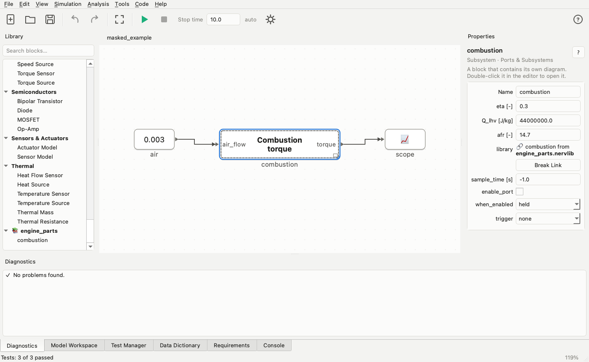
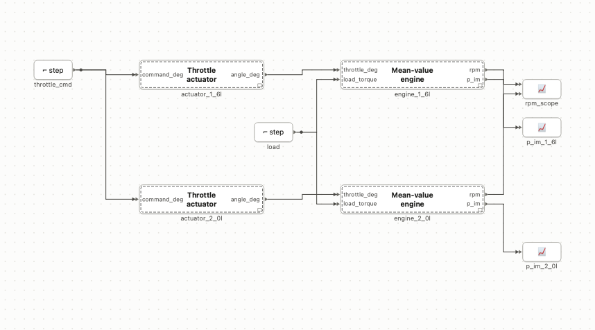
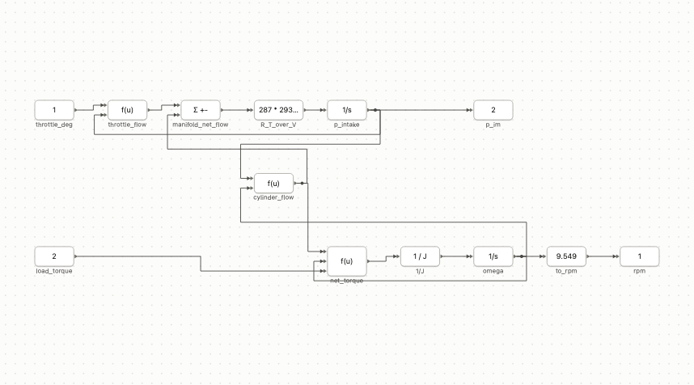
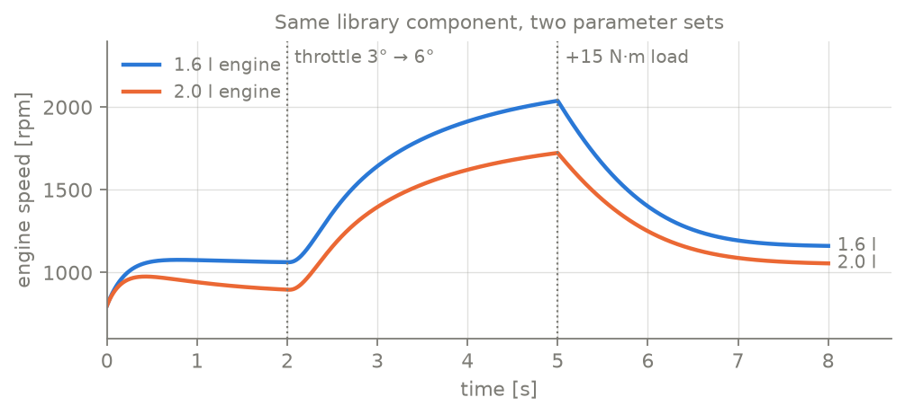

Component libraries¶
A component library is a set of reusable subsystems shared between models, for example an engine model, a sensor model with filtering and diagnostics, or a standard PI controller from your team. Fix a component once in its library, and every model that uses it gets the fix the next time it is opened.
A library is an ordinary model file with the extension .nervlib. Each subsystem at its top level is
one component. Components are usually masked,
so each use can have its own parameter values.

Create a library¶
- Build a subsystem in any model, and give it a mask with its parameters.
- Select it and choose Edit → Save Subsystem to Library…. Pick an existing
.nervlibfile or type a new name.
The subsystem is added to the library (replacing a component with the same name), and the subsystem in your model becomes a linked copy of it. The library also appears in the Library panel, marked 📚.
Use a component¶
Drag a component from its 📚 library in the Library panel onto the canvas, or double-click it. To show another library in the panel, use File → Add Component Library…. The panel remembers your libraries.
A linked subsystem has a dashed outline. Its Properties show which library it comes from, and its mask parameters, which you set per instance.
| You can | You cannot (edit the library instead) |
|---|---|
| set the mask parameter values of each instance | add, remove or change blocks inside it |
| open it and look inside | change its mask definition or its variants |
| connect it like any block |
Break Link in the Properties panel turns a linked copy into an ordinary subsystem that you can change freely. It no longer receives updates from the library.
Change a component¶
Open the .nervlib file with File → Open (or right-click the library in the Library panel → Open
Library for Editing), change the component, and save. Models that use it are updated:
- when they are opened, or
- right away with File → Update Library Links.
Each instance keeps its own mask values, as long as the library still has a parameter with that name. New mask parameters get their default value from the library.
Where the library is stored¶
The model stores the path of the library relative to the model file, so a project folder with models and libraries can be moved or shared as a whole (for example in git). It also stores a copy of each linked subsystem, so the model still opens and simulates when the library is missing. You then get a warning in the Diagnostics panel.
Example: two engines from one component¶
examples/engine_library.py builds examples/library/engine_parts.nervlib with two masked components: a
mean-value engine (throttle body, intake manifold, cylinders, torque and crankshaft) and a throttle
actuator. examples/engine_comparison.nervus uses each component twice, to compare a 1.6 l and a 2.0 l
engine with the same throttle steps. Only the mask values differ: displacement and the inertia J.

Inside, the component uses its mask parameters like workspace variables: the Gain 1 / J, and the
parameters of its Python Function blocks ([eta_vol, displacement], read as p[0], p[1] in the code):


At the same throttle opening the larger engine runs slower: the throttle limits how much air gets in, and
the larger engine has more friction. Open the library, change the friction model in net_torque, save, and
reopen the comparison model: both engines use the new model.
uv run python examples/engine_library.py
In Python¶
from nervus.library import instantiate, refresh_links, save_to_library
save_to_library(engine, "parts.nervlib") # add or replace the component "engine"
e1 = model.add(instantiate("parts.nervlib", "engine"), name="engine_front")
e1.mask["displacement"] = 2.0e-3 # per-instance value
refresh_links(model) # update after the library changed